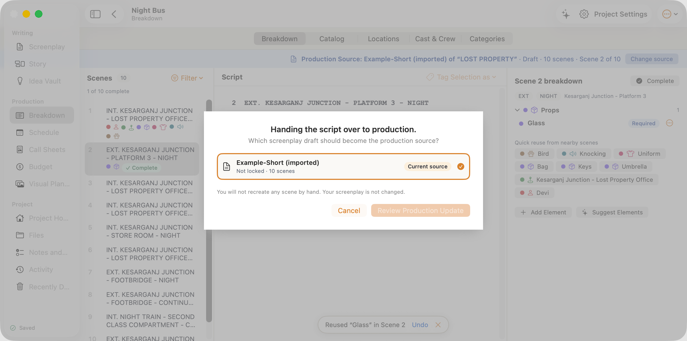

Filter scenes: All scenes (menubutton, scene-filter)
Tag Selection as (menubutton, script-tag-menu)
Script, Scene 2 (textarea, script-text)
Complete (button, mark-complete)
Props, 1 elements (button, category-mark-Props)
Actions for Glass (menubutton, element-actions-Glass)
Reuse Bird (Animals) in Scene 2 (button, category-mark-Animals)
Reuse Knocking (Sound) in Scene 2 (button, category-mark-Sound)
Reuse Uniform (Wardrobe) in Scene 2 (button, category-mark-Wardrobe)
Reuse Bag (Props) in Scene 2 (button, category-mark-Props)
Reuse Keys (Props) in Scene 2 (button, category-mark-Props)
Reuse Umbrella (Props) in Scene 2 (button, category-mark-Props)

WritingScreenplayStoryIdea VaultProductionBreakdownScheduleCall SheetsBudgetVisual PlanningProjectProject HomeFilesNotes and TasksActivityRecently DeletedSavedProduction Source: Example-Short (imported) of “LOST PROPERTY” · Draft · 10 scenes · Scene 2 of 10Scenes101 of 10 complete3, INT. KESARGANJ JUNCTION - LOST PROPERTY OFFICE - NIGHT4, INT. KESARGANJ JUNCTION - LOST PROPERTY OFFICE - NIGHT5, INT. KESARGANJ JUNCTION - STORE ROOM - NIGHT6, INT. KESARGANJ JUNCTION - LOST PROPERTY OFFICE - NIGHT7, EXT. KESARGANJ JUNCTION - FOOTBRIDGE - NIGHT8, EXT. KESARGANJ JUNCTION - FOOTBRIDGE - CONTINUOUS9, INT. NIGHT TRAIN - SECOND CLASS COMPARTMENT - CONTINUOUS10, EXT. KESARGANJ JUNCTION - FOOTBRIDGE - DAWNScriptScene 2 breakdownEXTNIGHTKesarganj Junction - Platform 3GlassRequiredQuick reuse from nearby scenesReused “Glass” in Scene 2Night BusBreakdownHanding the script over to production.Which screenplay draft should become the production source?You will not recreate any scene by hand. Your screenplay is not changed.Handing the script over to production.Which screenplay draft should become the production source?You will not recreate any scene by hand. Your screenplay is not changed.